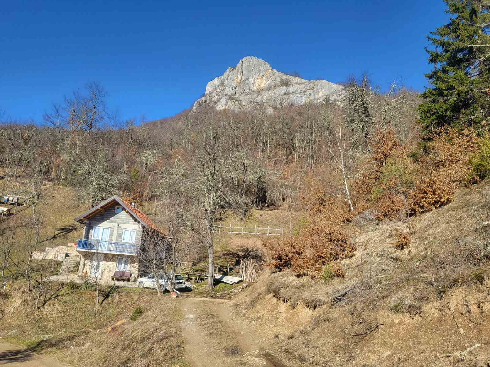

Historija
Paravci su naseljeni više stotina godina selo paravke su naseljavali većinski Mujezinovići nekada selo puno ljudi i životinja sada je samo netaknuta priroda sa par sezonskih naseljenika

mjesto Gdje se priroda i raj stapaju u jedno
Otkrijte prirodu
Paravci su naseljeni više stotina godina selo paravke su naseljavali većinski Mujezinovići nekada selo puno ljudi i životinja sada je samo netaknuta priroda sa par sezonskih naseljenika
bjeljevine su dugo poznate stanonvicima paravaka kao ljekoviti izvor gdje lgenda kaze da je jedna slijepa žena uspjela progledati kada se umila vodom sa ovog izvora